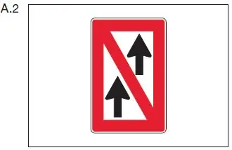
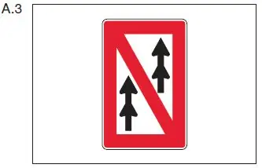

§ 6.11 Überholverbot durch Schifffahrtszeichen
Binnenschifffahrtsstraßen-Ordnung
Unbeschadet des § 6.08 Nummer 1 besteht
1. auf einer Strecke, deren Beginn durch das Tafelzeichen A.2 (Anlage 7) gekennzeichnet ist, ein allgemeines Überholverbot; |  |
2. auf einer Strecke, deren Beginn durch das Tafelzeichen A.3 (Anlage 7) gekennzeichnet ist, ein Überholverbot für Verbände untereinander; dies gilt nicht, sofern einer der Verbände ein Schubverband ist, dessen Länge 110,00 m und dessen Breite 12,00 m nicht überschreiten. |  |